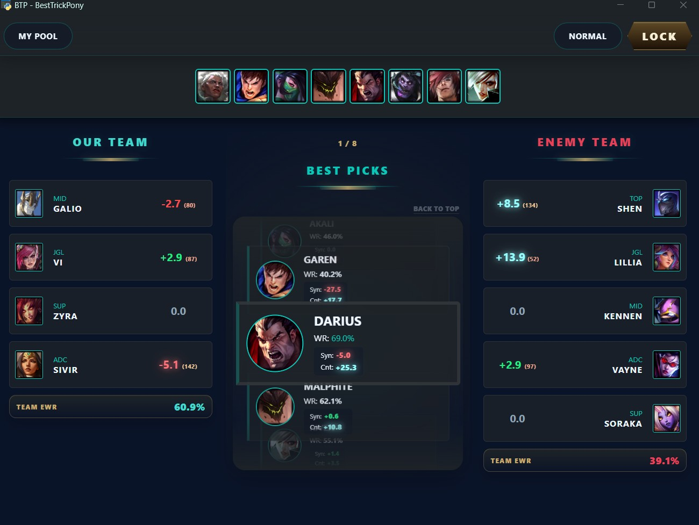
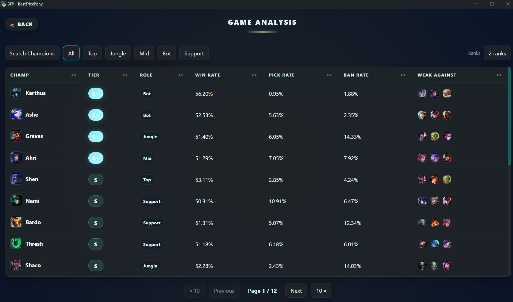
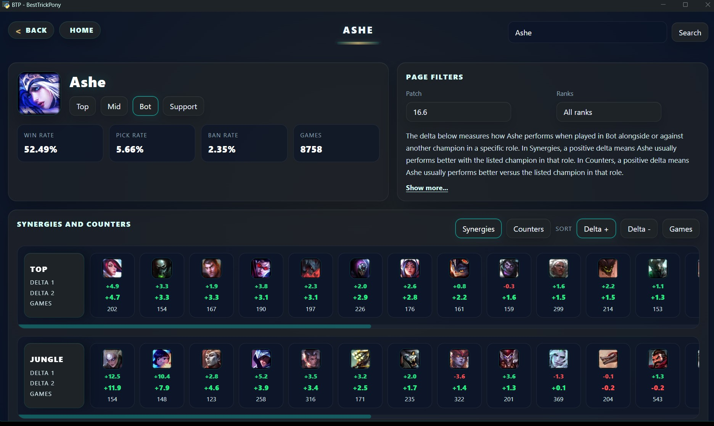

BEST TRICK PONY
El asistente de Draft y Game-Tracking definitivo. No es IA, es matemática pura. Diseñado para jugadores que buscan la maestría a través de datos que TÚ interpretas.

El asistente de Draft y Game-Tracking definitivo. No es IA, es matemática pura. Diseñado para jugadores que buscan la maestría a través de datos que TÚ interpretas.

BTP te muestra datos estadísticos matemáticos puros extraídos de partidas de High ELO. No utilizamos algoritmos "Caja Negra" de IA.
Te proporcionamos la información empírica para que TÚ, como jugador experto de tu Champion Pool, puedas interpretar el mejor curso de acción.
El game-tracker de BTP está diseñado para mejorar tu Macro-awareness. Estar atento a tus propios objetivos (Visión, CS, Mapa) y puntuarlos segundos después de que explote el Nexo es clave para tu mejora.
Nuestra filosofía es el Self-Coaching Silencioso.
Creemos en el empoderamiento del usuario. El objetivo de BTP no es darte una lista de normas estrictas que seguir ciegamente.
BTP es una brújula dinámica que te ayuda a elegir una opción lógica entre todas las disponibles basada en datos empíricos.
Actualmente estamos en fase Beta. BTP ha procesado 50.000 partidas de high-elo para este prototipo.
La información estadística mostrada es experimental. Te pedimos no seguir estos datos ciegamente en competitivo mientras validamos el modelo.
Creemos firmemente que la mejor recomendación es la que se basa en lo que tú sabes jugar. De nada sirve que el meta dicte un campeón si no conoces sus mecánicas.
Construye tu lista de confort en los roles que juegas y BTP cruzará las matemáticas con tu habilidad real.
¿Quieres salirte del guion? ¡PUEDES ACTIVAR EL MODO ALL CHAMPS! ;)

Todos los datos que usamos en el asistente de Draft pueden consultarse fuera de partida, en modo off-game, para estudiar el estado del meta antes de entrar en cola.
Revisa el rendimiento global de cada campeón, detecta tendencias del parche y convierte la preparación de draft en un análisis real del meta.

Abre la página de cada campeón y consulta sus mejores sinergias, counters, items y runas.
Usa estas estadísticas para ajustar tu pool, preparar matchups y ver qué opciones están funcionando realmente en high-elo.

La mejora continua requiere registro. Observa tus estadísticas, analiza tus sensaciones con el mini-popup post-partida y descubre en qué áreas estás brillando o fallando.
Fase Beta Activa: Usa tu propia API Key de Riot para sincronizar tu historial al instante. Esta configuración manual es temporal mientras esperamos la aprobación de la clave de producción.